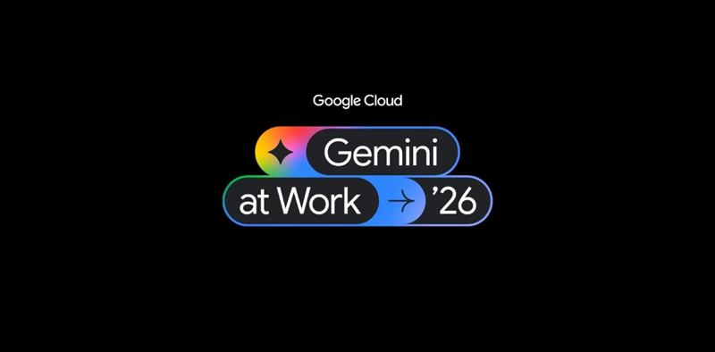
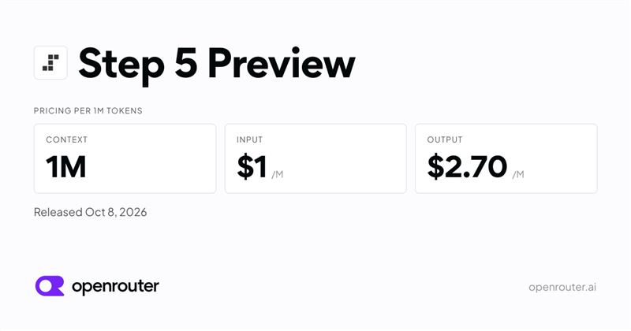
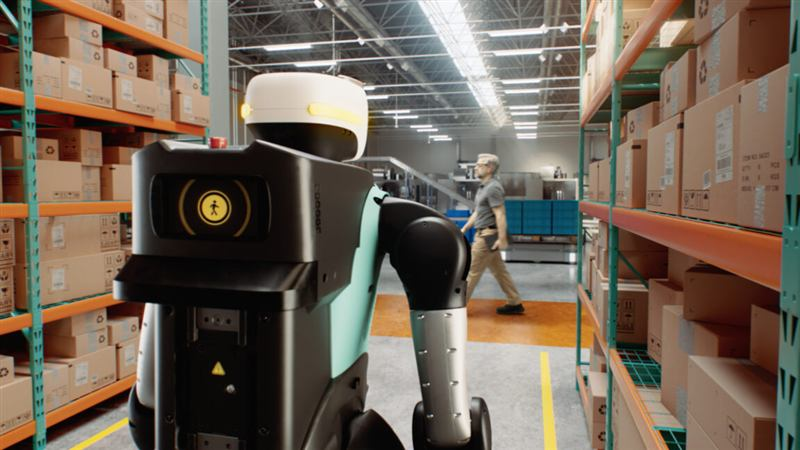
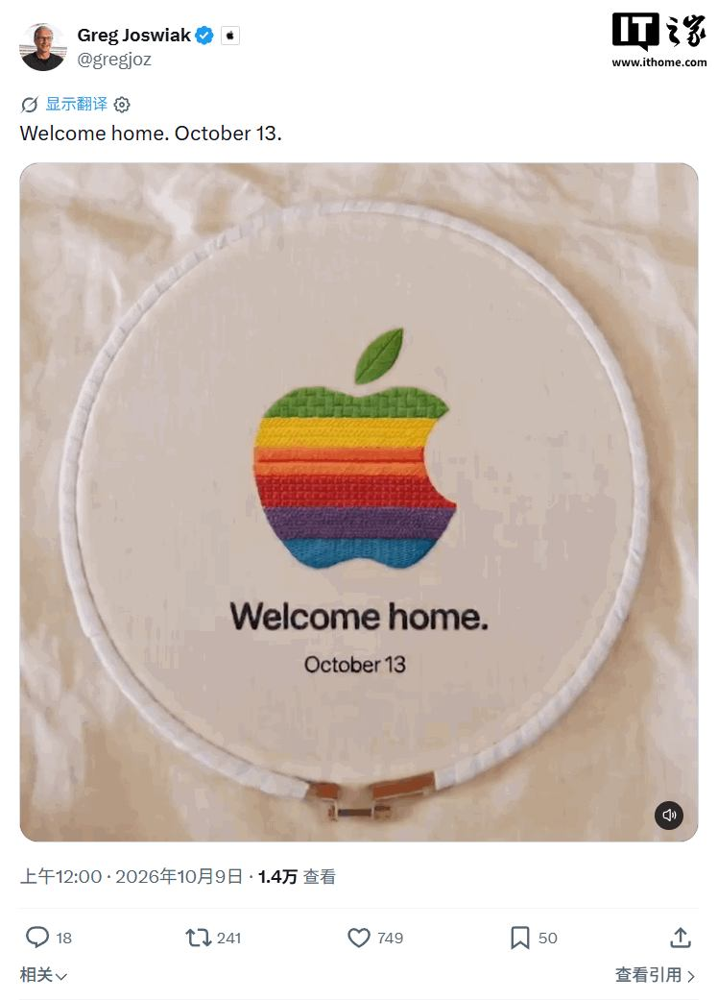
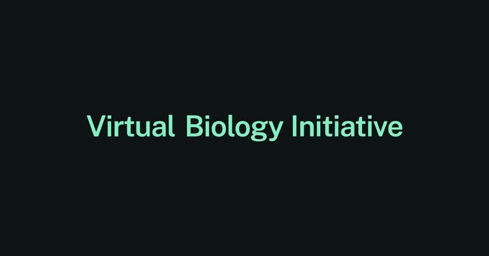

AI 每日精选
每天 7:00 更新 · 汇集全球人工智能要闻 · 附影响分析
今日总括
2026 年 10 月 9 日，AI 竞争继续向「能动手的智能体」收敛：谷歌把 Gemini 升级为可规划、可委派子任务、拥有工作身份的企业智能体，微软则在硬件与 Windows 层面把 AI 推向本地；与此同时，Anthropic 的 Claude Haiku 5.5 大幅提升电脑操作能力、阶跃星辰的 Step 5 Preview 以百万级上下文登上 OpenRouter、Mistral 以开放权重叫板闭源，「更强的小模型 + 开放权重」持续压低使用门槛。资本与审视同时升温：OpenAI 被指年化营收比预期低约 200 亿美元，三名被解雇的安全研究员发公开信质疑公司安全文化；英伟达押注物理 AI、Waymo 拿下 50 亿美元贷款、苹果定档 10 月 13 日发布会，则显示机器人、自动驾驶与家庭 AI 的入口争夺正在加速。
一、模型前沿：智能体、小模型与开放权重
谷歌把 Gemini 升级为「通用工作智能体」，可委派子任务并拥有工作身份
来源：TechCrunch · IT之家 · TechCrunch · IT之家
亮点谷歌在 Gemini at Work 2026 发布会上，把 Gemini 升级为可规划、执行任务的 AI 智能体（Gemini Agent），定位「通用工作智能体」，支持 Gemini Enterprise、Workspace 以及第三方服务；它可以把工作委派给子智能体、调用多个模型，并拥有自己的工作身份（workplace identity）。首批面向企业客户。
影响推测从「回答问题」到「代为执行」是企业 AI 的关键跃迁，工作身份与跨系统权限是落地前提，也会把审计、权限最小化和责任归属推到前台。若智能体能真正跨系统操作，受益最大的是需要流程自动化的企业；但初期可靠性与安全边界仍需实测，谷歌选择先企业后消费者，也说明其更看重可控场景。

Anthropic 发布 Claude Haiku 5.5：电脑操作能力暴涨，成本下降约 75%
来源：雷峰网 · 原文
亮点Anthropic 发布 Claude Haiku 5.5，计算机操作能力大幅提升——OSWorld 2.1 评测由上一代的 15.7% 跃升至 72.4%，知识工作与复杂推理也有明显改善；新模型加入自适应推理机制，按任务动态分配推理，官方称平均运行成本较上代下降约 75%。需注意，超过 10 万 Token 后输入输出单价均上涨 5 倍。
影响推测小模型在「操作电脑、执行动作」上的跃升，让低成本模型可用于更多智能体步骤，对高并发、低成本的调用场景价值明显。但报道也指出其复杂编程能力仍差一截，且长上下文（>10 万 Token）成本翻 5 倍，说明「便宜」是按场景的——长文档、长任务未必省钱。厂商口径仍需独立基准验证。
阶跃星辰 Step 5 Preview 上架 OpenRouter：百万级上下文 MoE 模型
来源：Hacker News · OpenRouter · OpenRouter · Hacker News
亮点阶跃星辰（StepFun）的 Step 5 Preview 出现在聚合平台 OpenRouter：这是一个百万（1M）上下文、MoE 架构的新模型预览版，Hacker News 讨论约 75 分、23 条，是当日热度较高的模型条目之一。
影响推测「百万级上下文 + MoE」的开放预览，继续压低长上下文与大规模参数的使用门槛，也让第三方平台上多了一个可选模型。但作为 Preview 版本，其稳定性、实际竞争力与成本表现都还待评测——HN 评论中也有声音认为其基准成绩尚不突出，不宜过早定论。

Mistral 发布「Le Chonk」，称开放权重模型可挑战顶级闭源模型
来源：Ars Technica · 原文
亮点Mistral 表示其代号「Le Chonk」的新模型在保持开放权重的前提下，能力可媲美顶尖闭源模型。
影响推测若坐实，会强化「开放权重追平闭源」的叙事，为企业私有部署多提供一个选择，也会对闭源厂商的定价形成压力。但目前多为厂商自述，能力评测、权重许可范围与实际部署成本都需等公开材料与独立验证。

二、OpenAI：营收预期与安全文化受质疑
报道称 OpenAI 年化营收比此前预期低约 200 亿美元
来源：TechCrunch · 原文
亮点有报道称，OpenAI 的年化营收比此前预期低约 200 亿美元；此前曾有报道称其年化营收约 700 亿美元，新报道称实际数字要低得多。
影响推测若属实，会直接冲击「巨额算力与模型投入可被更快变现」的假设，也可能影响其后续融资、数据中心承诺与合作方的预期。但这一数字来自媒体报道，OpenAI 尚未以官方口径确认，具体规模与统计方式都需谨慎对待。
三名被解雇的 OpenAI 安全研究员发公开信，否认指控并警告「寒蝉效应」
来源：TechCrunch · 原文
亮点三名被解雇的 OpenAI 安全研究员否认关于「不当处理敏感信息」的指控，并联名发表公开信，警告这些解雇正在公司内部对 AI 安全文化造成寒蝉效应。
影响推测安全团队与商业化节奏之间的张力，是前沿实验室的长期难题；公开信把内部治理争议外部化，可能影响人才流向，以及外界对 OpenAI 安全承诺的信任。目前仍是双方各执一词，事实与责任有待更完整的信息，不宜单方面下定论。

OpenAI 公布的数学证明被指未达学界标准
来源：TechCrunch · 原文
亮点TechCrunch 报道，OpenAI 近期公布的大批数学证明未遵循其咨询的数学家小组所制定的规范，被认为尚未达到学术界的标准。
影响推测这提醒人们区分「能写出看似正确的证明」与「符合学术共同体规范的成果」；在数学这类可被严格检验的领域，AI 输出的价值取决于形式化与同行评审，而非数量。它也说明前沿实验室与学术界的协作规范仍在磨合，「AI 做数学」的进展需要更严格的验证方式。
三、硬件与物理 AI：从桌面到马路
英伟达押注「物理 AI」：面向机器人推全栈安全方案，剑指 Robotaxi 与人形机器人
来源：Ars Technica · 原文
亮点英伟达把「物理 AI」作为下一阶段重点，推出一套面向机器人的全栈安全解决方案，据 Ars Technica 已有机器人公司在使用，目标是让 Robotaxi 与人形机器人更安全。
影响推测从生成式 AI 转向能驱动物理世界的 AI，是英伟达延续算力叙事的自然延伸：机器人、自动驾驶对仿真、训练与安全验证的算力需求巨大。但「安全」要靠可验证的标准与真实运行数据，全栈方案的实效仍需时间与事故数据检验，短期更像卡位而非终局。

微软发布「AI 友好」硬件与 Windows 改动，并推 MacBook Pro 以旧换新补贴
来源：Ars Technica · IT之家 · Ars Technica · IT之家（置换补贴）
亮点微软发布会推出更「AI 友好」的硬件与 Windows 改动，在桌面与系统里集成更多 AI。同时在美加官方商城推出限时优惠：把苹果 MacBook Pro 置换为 Surface Laptop Ultra，最高可获 1000 美元（约合 6712 元人民币）补贴。
影响推测「硬件 + 系统 + 置换补贴」的组合，是想把本地 AI PC 从概念推向换机潮；直接拿 MacBook Pro 用户开刀，说明目标锁定高端创作与开发者人群。实际效果取决于本地 AI 功能的真实价值与整机价格，「AI 友好」目前仍偏营销标签，用户体验要靠后续评测说话。
Waymo 获 50 亿美元贷款，将扩张无人驾驶出租车并进军欧洲、日本
来源：IT之家 · 原文
亮点Waymo 宣布获得 50 亿美元（约合 335.62 亿元人民币）贷款，融资方包括黑石、太平洋投资管理公司（PIMCO）、Sixth Street 等；资金将用于推动无人驾驶出租车扩张，并计划进入欧洲、日本等市场。
影响推测在自动驾驶商业化普遍承压的背景下，这种规模的债务融资说明资本市场仍愿为头部玩家买单。进军欧洲、日本意味着扩张从美国本土走向监管与路况更复杂的市场，落地节奏将受当地法规、运营成本与安全记录制约。
苹果官宣 10 月 13 日「欢迎回家」发布会，暗示首款智能家居中枢
来源：IT之家 · 原文
亮点苹果官宣「Welcome home（欢迎回家）」发布会定档北京时间 10 月 13 日晚 9 点，预告暗示将发布首款智能家居中枢产品。
影响推测若确为智能家居中枢，意味着苹果要在「家庭 AI 入口」上加码，与亚马逊、谷歌争夺客厅场景；对苹果而言，这也可能是把 Siri 与 AI 能力落到实体设备的契机。具体形态、AI 集成深度与生态开放程度仍待发布会揭晓。

四、资本与算力底座
LMArena 母公司估值 10 个月近翻倍至 31 亿美元，开始衡量模型「会不会撒谎」
来源：TechCrunch · 原文
亮点AI 评测榜 LMArena 背后的公司完成 2 亿美元融资，由 Lightspeed 与 Khosla 领投，10 个月内估值接近翻倍至 31 亿美元；除模型能力外，它正在把「对齐问题」（如模型是否会撒谎）纳入衡量范围。
影响推测第三方评测榜正从「社区工具」变成有商业价值的「行业标尺」，资本市场愿意为「谁说了算」付费。风险在于评测方法与赞助关系会影响公信力——一旦被认为可被影响，其权威性就会受损；把对齐纳入评测是方向上的进步，但如何量化仍需透明方法。
华为为 KV Cache 单独做存储，专为推理设计的 SSD 规格仍未定
来源：雷峰网 · 原文
亮点报道称 KV Cache 已大到需要单独管理：华为在 2025 全联接大会上推出 OceanStor M900，英伟达也已推出 CMX Context Memory Storage。这类「AI 记忆存储」产品会把推理中已产生、可能复用的 KV Cache 做分层管理和存储，在后续请求命中时减少重复计算；有业者称命中率哪怕从 90% 提升到 95% 依然很有价值。但专用 SSD 的规格与价格尚未定型。
影响推测把 KV Cache 单独作为一层存储来管理，说明推理成本优化正从「算力」扩展到「存储与内存层级」，这会带动专用存储与 SSD 的需求。不过产业链仍在摸索标准，规格未定意味着短期内难有统一的采购与定价依据，落地节奏可能慢于概念热度。
「AI-ready 生物数据」全球计划获 18 亿美元承诺
来源：Hacker News · Biohub · Hacker News
亮点一项面向「AI-ready 生物数据」的全球计划获得 18 亿美元承诺，用于扩展虚拟生物学计划（VBI）。Hacker News 讨论（约 39 分）中，有评论者指出与此同时美国现政府正在把一些此前公开获取、对研究至关重要的数据集下线。
影响推测生命科学的大模型进展高度依赖高质量、开放的数据集；资金承诺是好事，但「有了钱能否真正开放、长期可及」才是关键。评论提到的数据下线风险，正说明开放数据的可持续性并不只取决于资金，还取决于政策与治理。

网友怎么说
FomiteMeanwhile the current administration is actively taking formerly publicly available data sets that are critical for research offline.
五、行业与社会
用 1 万机器人账号 + AI 歌曲刷流媒体，男子骗 800 万美元版税被判 18 个月
来源：Ars Technica · 原文
亮点一名男子使用约 1 万台机器人账号加上 AI 生成歌曲刷高流媒体播放量，骗取约 800 万美元音乐版税，最终被判处 18 个月监禁。
影响推测这是「AI + 自动化」被用于规模化薅平台补贴的典型案例，指向流媒体分账机制的结构性漏洞。判例会推动平台加强反作弊与播放真实性校验；但对独立音乐人与正常使用 AI 辅助创作的人，应区分对待，避免因反作弊而误伤。
网友怎么说
ChrisArchitectDOJ source: https://www.justice.gov/usao-sdny/pr/north-carolina-man-sent... ( https://news.ycombinator.com/item?id=49995378 )
hoselWithout the pelicans I don’t know what to think ------------- https://postimg.cc/c6L2MjSt 12m 0s and $0.28 >Draw a Hacker News-style comment thread. Top comment by a user named "pelican_enjoyer": "Without the pelicans I
beholepaging Simon Wilson!
minimaxirSince people keep doing it: no, you don't have to make an allusion to Simon's pelicans every time a Hacker News thread about a new LLM pops up. It's a lower-effort joke than even Reddit memes.
RazenganThere was a better alternative, buried by dumb HN censorship: The Assbench: https://news.ycombinator.com/item?id=49807688
esafakIt doesn't look competitive along any dimension: https://artificialanalysis.ai/models/step-5#intelligence-com... Better luck next time.